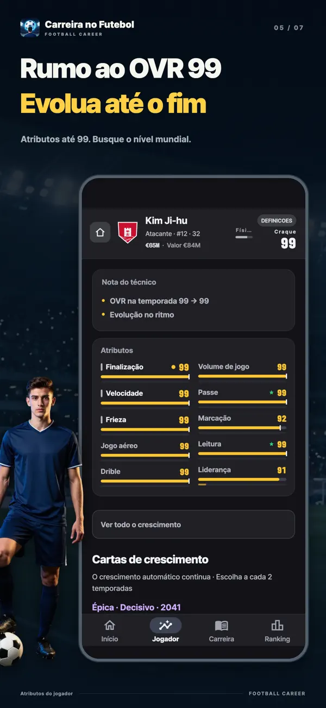
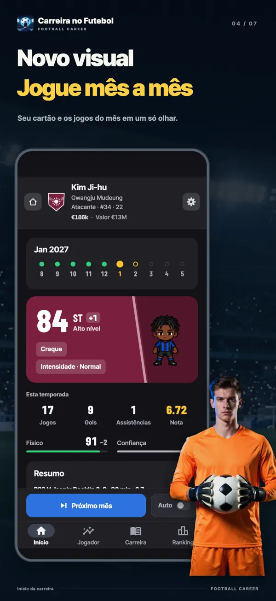
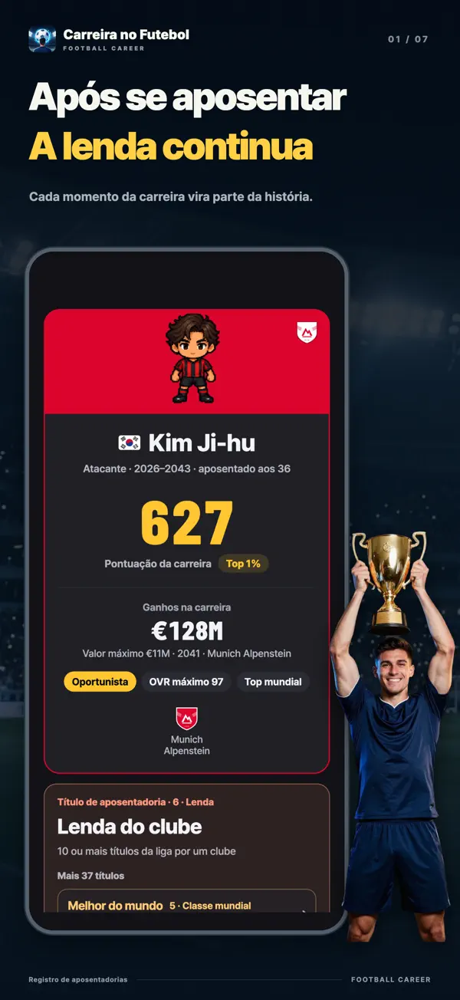
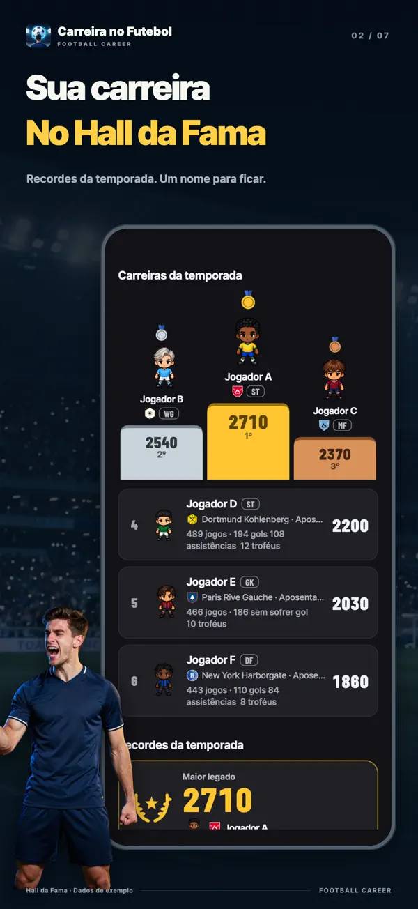
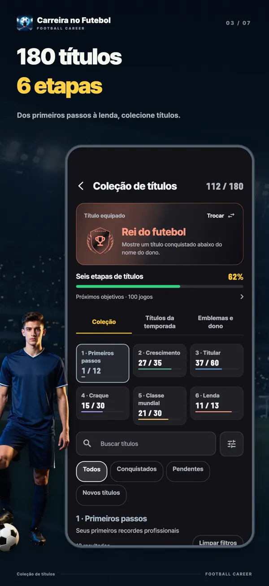
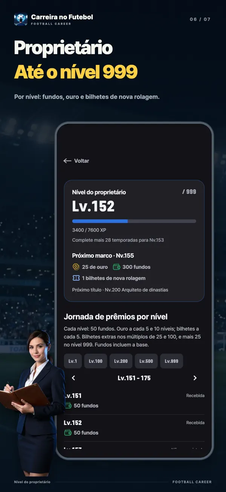
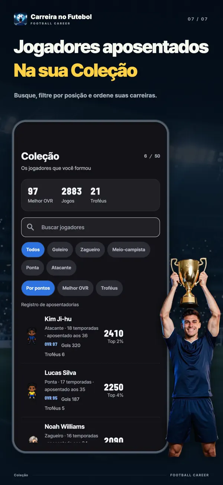

- YT Lab
- Simulador de Carreira Futebol

Simulador de Carreira Futebol Uma carta pode mudar sua carreira
No Simulador de Carreira Futebol, a cada duas temporadas você escolhe uma entre três cartas de crescimento da mesma raridade. Aumentar atributos na hora, ampliar um limite oculto ou cumprir uma condição para ganhar uma recompensa maior? Viva a carreira de um único jogador, dos dezessete anos na base até a aposentadoria.
Escolha seu próximo crescimento
Atacante de 27 anos · OVR 96Você pode rolar cada carta de novo uma vez. A raridade continua a mesma.
Esta experiência usa as cartas e os cálculos reais do aplicativo. Ela recria o momento em que um atacante estrela de 27 anos recebe uma rodada Legend, a mais rara. Ao rolar de novo ou tirar as próximas cartas, as opções e probabilidades são as mesmas do jogo. A experiência sempre recomeça com o mesmo jogador.


Download gratuito, com compras no aplicativo. Disponível para iPhone e iPad com iOS 15 ou superior e Android 7.0 ou superior.
A cada duas temporadas, uma entre três
Os atributos evoluem automaticamente conforme você joga. As cartas de crescimento acrescentam escolhas a essa evolução. No início e depois a cada duas temporadas, aparecem três cartas da mesma raridade e de famílias diferentes: você fica com uma. Quanto maior a raridade, maior o efeito. A primeira carta é Épica garantida.
Cartas de efeito imediato
O atributo sobe assim que você escolhe. O foco compensa dá +6 a um atributo principal e +3 ao teto. Tapar lacunas aumenta em 4 o menor atributo principal e o menor secundário.
Cartas que ampliam seus limites
Cada atributo tem um teto oculto onde o crescimento automático para. Um pouco de potencial, Potencial aberto e Salto de potencial elevam esse limite. As cartas podem aumentar os tetos até 95.
Cartas que recompensam seu desempenho
Caçador de gols dá +1 de Finalização a cada 5 gols; Estrela da partida dá +2 a um atributo a cada 2 MOM; Pronto para subir dá +8 a um atributo principal após 30 jogos. A recompensa vem de jogar bem.
Cartas com um preço
Sprint explosivo dá +8 de Velocidade em troca de −3 de Jogo aéreo. Talento diabólico dá +12 ao teto e +10 a um atributo principal, mas tira 3 de um secundário. Todo ganho tem sua contrapartida.
Cartas que prolongam a carreira
Segundo auge reduz o envelhecimento pela metade durante três temporadas e prolonga a carreira em 2 anos. Última chama aumenta três atributos principais em +6, mas você se aposenta ao fim daquela temporada.
Rolar de novo é grátis
Não gostou de uma carta? Role de novo, uma por vez. A raridade não muda, e a nova carta será de uma família diferente das outras duas.
Do banco ao prêmio de Melhor jogador do mundo
Você não começa como titular na elite. Passa pela base e pela equipe reserva, depois conquista seu espaço a partir do banco do time principal. Lá na frente está o prêmio de Melhor jogador do mundo, que reconhece o melhor de cada temporada. Suas cartas e seu desempenho decidem até onde você vai.
- 17anos
Categorias de base
Você começa na base aos dezessete anos. Com o pacote de início na base, pode começar aos quinze.
- 19anos, no máximo
Equipe reserva
Você sobe à equipe reserva quando se aproxima do nível do time principal ou completa dezenove anos. A promoção é definida no fim da temporada.
- 16–21estreia por liga
Do banco do time principal à titularidade
A idade de estreia varia por liga. Ao atingir os requisitos de idade, atributos e nota da temporada, você chega ao time principal. A confiança do técnico define seus minutos.
- Verãoapós a temporada
Transferências e renovações
Peça uma transferência ou escolha entre as propostas. Com seu agente, negocie salário, Promessa de titular, Multa rescisória e outras cláusulas.
- 18+no time principal
Seleção
Jogadores do time principal com dezoito anos ou mais podem ser convocados. O torneio mundial e os torneios continentais se alternam a cada dois anos.
- 36–41conforme a posição
O que fica depois da aposentadoria
Por padrão, um Ponta joga até os 36 anos e um Goleiro até os 41. Cartas e eventos podem prolongar a carreira, e você também pode decidir parar antes.
Jogue mês a mês. Evolua dentro de campo.
Uma temporada tem dez meses, de agosto a maio, e 38 jogos. Partidas, gols, assistências, jogos sem sofrer gol, MOM e notas viram crescimento naquele mês, com números mostrando exatamente o que evoluiu. Avance mês a mês ou deixe o tempo passar automaticamente.
Crescimento do mêsDrible 57 → 58 +1
Um grande mês pode render Jogador do mês, Seleção do mês e, para Goleiros, Defesa do mês. São seus números que decidem, sem sorteios ocultos. No fim da temporada, você pode buscar Artilheiro, Seleção da temporada, Craque do ano e até Melhor jogador do mundo.
Telas do jogo







Um jeito diferente de viver o futebol
Um jogador, não um técnico
Não há tela de escalação, quadro tático nem verba para contratar. O técnico decide seus minutos. Quando ele muda, o perfil de jogador que procura também pode mudar.
As probabilidades ficam à vista
Nas situações da temporada, cada escolha mostra antes as chances dos três resultados, em barras e porcentagens. Você também pode conferir quanto os atributos, a confiança do técnico, a condição e as cartas de crescimento alteraram esses números.
Cada liga, uma carreira diferente
Da Inglaterra, Espanha, Alemanha, Itália e França à Coreia, ao Japão e à América do Sul. Cada liga tem sua idade de estreia, salários e limites de estrangeiros. Todos os nomes de ligas, clubes, jogadores e técnicos são fictícios.
A carreira acaba. Os recordes ficam.
Ficam suas estatísticas e uma avaliação em seis eixos: qualidade, produção, volume, prêmios, títulos e palco. Você vê sua posição percentual entre 20.000 carreiras simuladas pelas regras do jogo. Carreiras concluídas entram nos rankings semanal, mensal e geral e no Hall da Fama da temporada.
Perguntas frequentes
- É grátis?
- Você pode baixar e jogar até o fim de graça. As cartas de crescimento e as novas rolagens também são grátis. As compras opcionais incluem remoção de anúncios, pacote de posições, pacote de início na base, pacote de apoio, ouro e bilhetes de nova rolagem. As chances dos atributos iniciais são iguais nas rolagens gratuitas, por anúncio ou com bilhetes.
- Dá para jogar sem internet?
- A carreira e o salvamento funcionam no aparelho, então você pode jogar offline. Rankings, compras, uso de ouro e transferência para outro aparelho precisam de internet.
- Dá para jogar no PC ou no navegador?
- É um aplicativo para iPhone, iPad e Android. Não existe uma versão web para jogar no navegador; nesta página você pode experimentar as cartas de crescimento.
- Quais posições estão disponíveis?
- Goleiro, Zagueiro, Meio-campista, Ponta e Atacante. Goleiro e Atacante são grátis; o pacote de posições libera as outras três. Cada posição tem sete estilos de jogo: 35 no total, todos gratuitos.
- Quantas carreiras posso jogar ao mesmo tempo?
- São três espaços de carreira para desenvolver três jogadores ao mesmo tempo. A nacionalidade define a primeira liga e a seleção.
- Existem jogadores ou clubes reais?
- Não. Todas as ligas, clubes, jogadores e técnicos são fictícios.
- Meu nome aparece no ranking?
- Carreiras concluídas entram no ranking, mas você pode desativar isso quando quiser. Nomes editados por você só são publicados com seu consentimento.